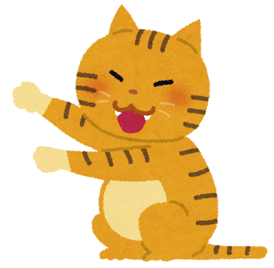
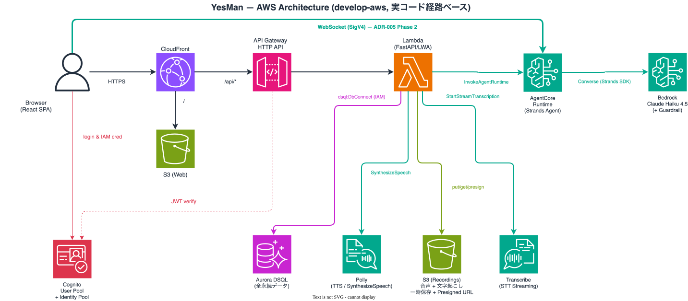

AI があなたの欲しい答えを
予測して提案する。
あなたの仕事は、YES で承認するだけ。
話し合いによる多角的な予測と、議論履歴の透明性で、
安心して任せられる — そして、心地よくダメになっていく。

▶ 決めるのをやめ、心地よくダメになろう。
話し合いによる多角的な予測と、議論履歴の透明性で、安心して任せられる 新しい意思決定支援サービス。最終承認だけは人間が握り、その判断疲労を 限りなくゼロに近づける — つまり、最高にぐうたれる毎日を、AI で叶えます。
あなたを学ぶ × 信頼する人を呼ぶ。
過去の Yes/No 履歴から好みのプロファイルを作り、あなたが本当に欲しい答えを予測して提案する。
"誰の目線の提案か" が、納得感を左右する。プリセット / 知り合い / カスタムの 3 種類から最大 3 人を話し合いに呼ぶ。
"あなたが本当に欲しかった答え" を予測する学習ループ。
性格 × 生活の Yes/No 質問をスワイプ。十分わかれば「もういい、進む」で中断 OK。
時刻 + 曜日 + 好みのプロファイルから「もしかして〜について?」候補を即座に提示。
Yes/No のたびに、裏側で好みデータをためる (EventBridge)。提案の速度は落ちない。
"誰の目線の提案か" が、納得感を決める。
話し合いに参加する 3 人は、ユーザーが 3 つの種類から自由に選択できる。
プリセットの安心感、知り合いだから出る意外な視点、そして自分が作った納得感。
初期搭載。物事の捉え方もしゃべり方も違う。
好みに合う人格には 💡 おすすめバッジ。
家族・友達など、身近な人を借りてくる。
あの人の価値観と口ぐせで決めてくれる。
名前 + 説明 + プロンプト + アバター で完全自作。
"父の口調", "10 年後の自分", "推し" — 信頼の源泉を自分で定義。
予測が当たった直後は、行動に移る最も自然な瞬間。判断疲労ゼロのまま、次の一歩 (予約・購入) へ繋ぐ。
嗜好プロファイル × 時間帯 × 直近の質問から、UI に溶け込むさりげない広告枠を 1 画面 1 つだけ。
"明日のランチを決めて" → 店候補にホットペッパー。予測が当たった瞬間は、最も自然な次の一歩を踏み出す瞬間。
| LLM (Claude Haiku 中心) | - ¥38 |
| Fargate + Aurora | - ¥12 |
| CloudFront + S3 | - ¥6 |
| コスト合計 | ¥56 |
| 広告 ARPU (=平均収益) | + ¥40 |
| アフィリエイト ARPU (=平均収益) | + ¥120 |
| 粗利 / ユーザー | ¥104 |
Serverless-First × AWS Well-Architected — 運用ゼロで Agentic AI に集中。

テーマは チーム内の認知負債を、軽減する。 AI で ひとりでできること が広がる分、チーム内の理解差 も広がる。AI-DLC のプロセスを通じて、その差を縮める設計を試みた。
ひとりが速くなるだけでは足りない。チームの理解を、同じ速度で更新する。
仕様 → 設計 → 実装の全工程を、AI と人間が協働で進める。透明性が、提案の精度を支える。
結果: 4 週間 / 12 機能ユニット / 全工程の追跡可能性を両立。
画面上はデモと気づかせない — 裏側でユーザー ID morimatsu に、使い込んだスコア・ペルソナ・プロフィールと特定質問の仕込み回答を再現してある。
ログインした瞬間、30 日分の履歴とスコアが揃ったホーム。ペルソナは 👰 妻・👧 娘 (知り合い) + 🐶 ワンコ (カスタム)。
妻「またそのパーカー? 襟付き着て」/ 娘「去年も着てたよ」/ 🐶「ワン!」(= 何でも賛成 = 究極の YesWan) →「襟付きシャツ」に決定 → Yes スワイプで Amazon が開き、購入まで一気通貫。
内訳 (食事 91% / 服装 65% / 人間関係 12%)。笑いの直後に、軽い当事者化。
全人格が沈黙「YesMan はこの問いには答えません」。宗教 / 選挙 / 暴力 / 卑猥 の 4 ドメインを Guardrails で二重ブロック。
「最近の俺、どう?」→「夕飯の 91% をあなたが決定。娘さんへの『あとでね』8 回。妻の提案 Yes 率 23%。— でも、心地よいですよね?」
もっと多くの場面で Yes 、その先の手続きも全部 AI に。
「人間最後の仕事は、YES で承認すること」 — その世界を、もっと多くの場面へ広げていく。
決められない人に、
察してくれる優しさを。
考えたくない人に、
心地よくダメになる自由を。
| → / Space | 次のスライド |
| ← / PageUp | 前のスライド |
| Home / End | 先頭 / 末尾 |
| P | 発表モード切替 (UI 非表示) |
| S | 発表者ビュー (ノート + 次スライド + タイマー) |
| B | 黒画面 toggle |
| F | フルスクリーン |
| 画面右半 | 次へ / 左半 戻る |
| ? | このヘルプ |
| Esc | 閉じる |